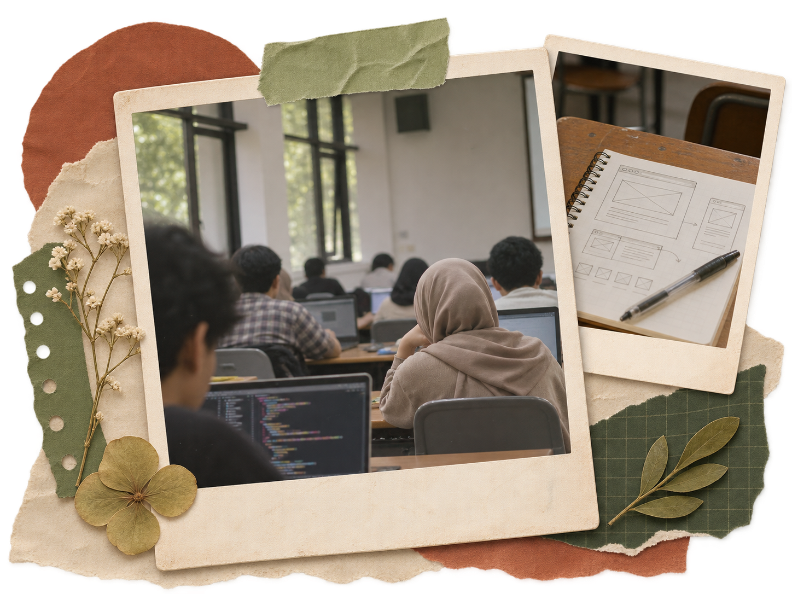
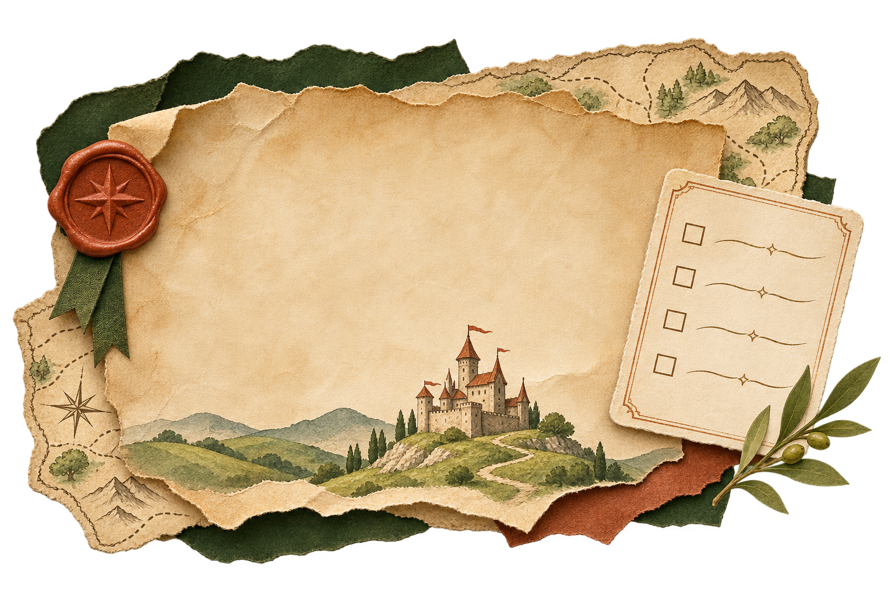
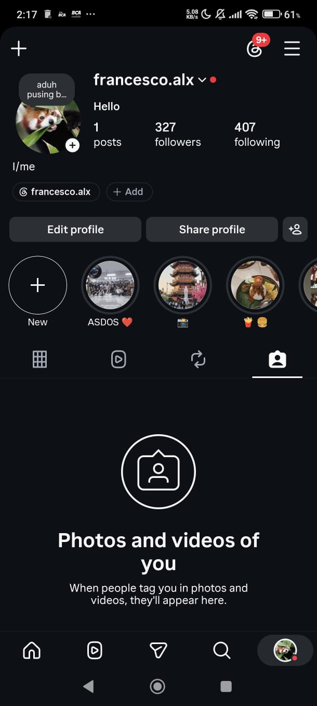
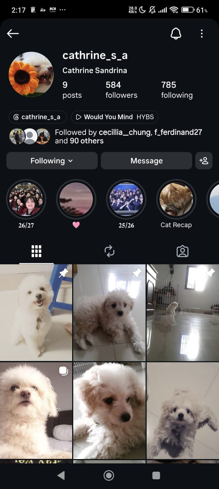

HTML
Mulai menyusun struktur dan fondasi sebuah halaman web.
SEBUAH CERITA TENTANG KITA
The Last Chapter.
Bukan tentang akhir dari semuanya.
Tapi tentang semua hal yang pernah terjadi di antaranya.
CHAPTER 01 THE BEGINNING
Waktu pembagian kelas keluar, kami belum yakin ini benar. Chat pun berubah jadi sesi tebak-tebakan: kami sebenarnya mendaftar mata kuliah apa?
Nama Pemrograman Antarmuka Pengguna terasa asing karena yang kami ingat, kami mendaftar untuk mengajar Front-End Programming. Reaksi pertama: mungkin ada yang salah input.
Di chat, tebakan kami berubah-ubah—salah input, tertukar, atau dipindahkan ke kelas lain. Kami saling tanya lagi mata kuliah apa saja yang kami pilih, sambil mencoba memahami pembagian yang baru keluar.
Lalu muncul kejutan berikutnya: kelasnya SI A 25. Francesco sudah pernah mengajar mereka. Buat Cathrine, ini pertemuan pertama.
Waktu itu kami belum tahu bahwa kelas yang kami dapat secara tak terduga ini akan menjadi bagian dari semester terakhir kami sebagai asisten dosen.
CHAPTER 02 SI A, APA ADANYA
Ada yang cepat paham materi. Ada yang instalasinya makan satu sesi. Kelas ini selalu punya ritme sendiri.
Ada yang cepat paham materi. Ada yang instalasinya makan satu sesi. Ada yang selalu aktif bertanya. Ada juga yang bikin suasana kelas jadi rame dan hidup.
Dari tugas kelompok ke presentasi dan demo website, hampir selalu ada yang dikerjakan bareng. Kadang satu instalasi sederhana bisa makan hampir dua jam—dan sesi kelas keburu habis.
Semua beda, tapi justru itu yang bikin SI A 25 selalu punya ritme sendiri.

CHAPTER 03 TEACHQUEST
Tiga minggu pertama terasa monoton. Kami ingin suasana belajar punya sesuatu yang berbeda. Memasuki minggu keempat, kami memperkenalkan cara baru agar belajar terasa seperti permainan: TeachQuest.

Tebak angka, tebak dosen, sampai kompetisi rekening bank terbanyak. Ada juga daily events dan random encounters yang membuat kelas punya kejutan sendiri.
One more thing. Di awal, TeachQuest cukup sering digunakan. Seiring waktu, intensitas penggunaannya memang berkurang, tetapi bukan berarti sistemnya ditinggalkan. Sesekali reward masih diberikan diam-diam kepada mahasiswa yang melakukan sesuatu yang layak diapresiasi—termasuk melalui salah satu website yang baru-baru ini digunakan di kelas. Beberapa kejutan memang lebih seru kalau tidak diumumkan dulu.
CHAPTER 04 THE DEVELOPER JOURNEY
Perjalanan kami di Pemrograman Antarmuka Pengguna bukan cuma soal menulis kode, tapi juga memahami proses di balik terbentuknya sebuah aplikasi web.
Sedikit demi sedikit, satu teknologi membawa kami ke teknologi berikutnya.
Mulai menyusun struktur dan fondasi sebuah halaman web.
Mengatur tampilan, layout, dan menjadikan halaman lebih menarik.
Membuat halaman menjadi interaktif dan responsif terhadap pengguna.
Melangkah ke framework modern untuk membangun aplikasi web yang lebih utuh.
Mengenal sistem tipe yang membantu membuat kode lebih aman dan terarah.
Menggabungkan kekuatan TypeScript dengan JSX untuk membangun komponen.

Setelah mengembangkan dan menyempurnakan aplikasi, saatnya membawa hasil kerja kita ke dunia nyata melalui proses deployment.
CHAPTER 05 THE PEOPLE BEHIND THE CLASS
Sebuah kelas juga dibentuk oleh orang-orang yang hadir di dalamnya—yang mengajar, membantu, bertanya, mencoba, dan ikut meramaikan suasana.
Dosen Pengampu — Pemrograman Antarmuka Pengguna
Di kelas, peran asisten dosen bukan cuma menyampaikan materi. Ada error yang perlu dibantu cari solusinya, pertanyaan yang masuk lewat chat, instruksi praktikum yang perlu dipastikan, dan banyak hal kecil yang membuat proses belajar tetap berjalan.
CHAPTER 06 THE ROLL CALL
Sebelum halaman ini ditutup, mari sebut satu per satu orang yang menjadi bagian dari cerita ini.
 SI A 25 ♡
SI A 25 ♡
CHAPTER 08 FROM FRANCESCO
Satu ruang untuk pesan yang ingin Francesco sampaikan langsung kepada kelas.
CHAPTER 09 FROM CATHRINE
Satu ruang untuk pesan dan kenangan Cathrine bersama kelas.
CHAPTER 11 KEEP IN TOUCH
Kalau mau tetap terhubung setelah kelas ini, follow kami di Instagram. Sampai ketemu di cerita berikutnya.

YOUR ASDOS Francesco Alexander@francesco.alx
YOUR ASDOS Cathrine Sandrina@cathrine_s_aONE LAST THING BEFORE WE GO
Semua cerita tadi punya satu kesamaan: ada orang-orang yang menjalaninya bersama.